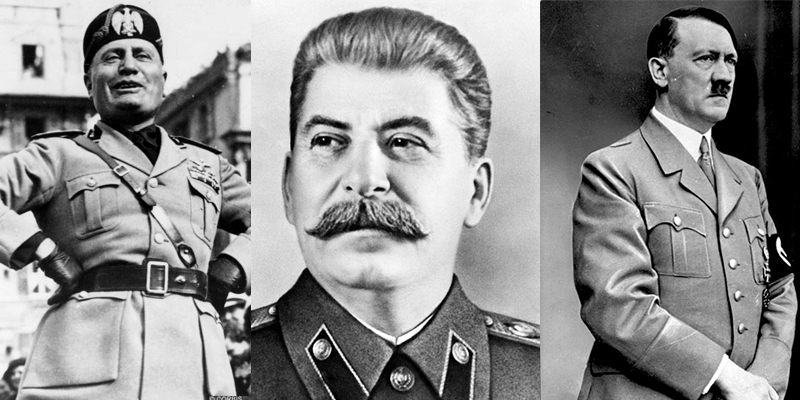
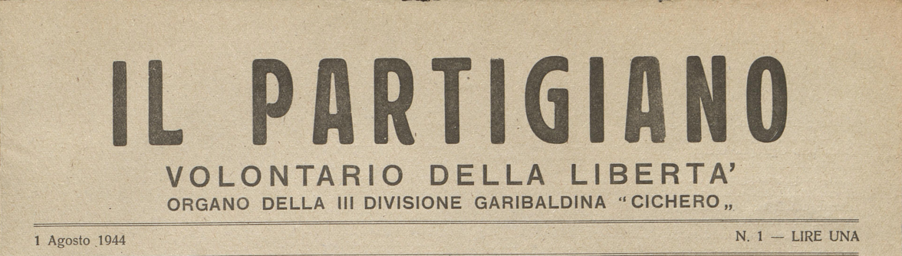
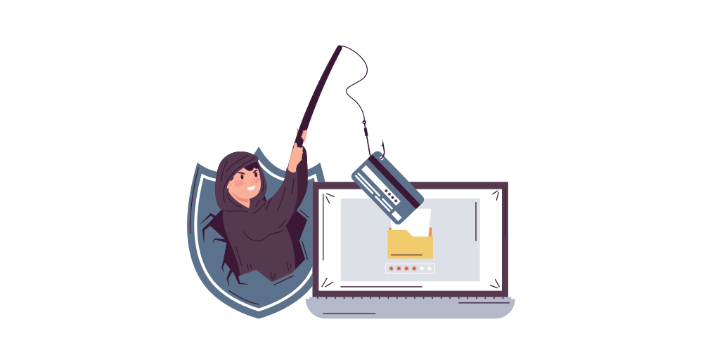
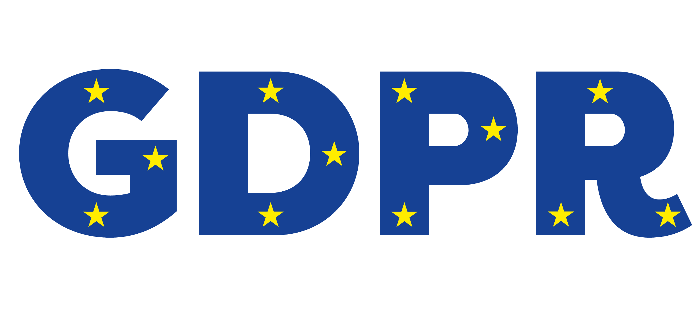
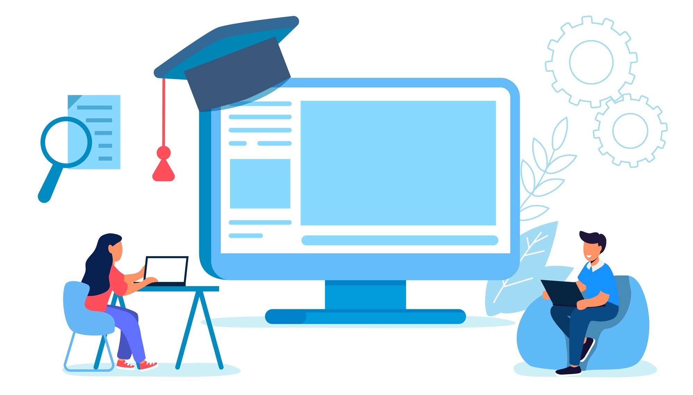

Libertà di espressione e sicurezza tra mondo reale e virtuale
Che cosa significa essere liberi online?
Nel mondo reale, la libertà di esprimere le proprie idee è un diritto fondamentale, protetto da leggi importanti come l'Articolo 21 della Costituzione Italiana. Oggi, grazie a Internet e ai social network, tutti possono parlare a un pubblico enorme con un semplice clic. Questa sembra una grande vittoria per la democrazia.
Tuttavia, c'è un forte paradosso. Nel mondo virtuale, questa enorme libertà crea anche molti rischi per la nostra sicurezza. Senza filtri, il Web è diventato un luogo anche per diffondere notizie false, manipolare le persone e rubare dati importanti. Per questo motivo, la sfida di oggi è capire come rimanere liberi online senza mettere a rischio la nostra sicurezza.
Le radici del controllo: propaganda e dittature del Novecento
Per capire i pericoli di oggi, dobbiamo guardare al passato. Nel Novecento, i regimi totalitari hanno mostrato cosa succede quando si cancella la libertà di espressione. Questi governi volevano controllare la mente dei cittadini usando la propaganda in modo scientifico.
• L'Italia Fascista e il MinCulPop (1937): Il regime creò il Ministero della Cultura Popolare. Questo ufficio inviava ogni giorno ai giornali le cosiddette "veline", cioè ordini precisi scritti su fogli di carta velina. Le veline dicevano ai giornalisti cosa pubblicare e cosa nascondere. Ad esempio, ordinavano di mettere le notizie sul Duce sempre in prima pagina per farlo sembrare un mito. Addirittura, una velina del 1938 chiedeva di scrivere che Mussolini non era stanco dopo ore di lavoro nei campi. Nel 1941, in piena guerra, il ministero ordinò invece di non parlare assolutamente delle lunghe file della gente davanti ai negozi di cibo, nascondendo così la povertà del Paese.
• La Germania Nazista e il Reichsministerium (1933): Guidato da Joseph Goebbels, questo ministero controllava radio, cinema, giornali e arte. Goebbels diceva che il ministero non serviva a controllare, ma a fare da "ponte" tra governo e popolo (un modo per abbellire la realtà). La sua regola principale era semplice: la propaganda deve concentrarsi su pochissimi concetti e ripeterli all'infinito, perché la gente finisce per credere a ciò che sente più spesso.
• L'URSS Stalinista e l'Unione degli Scrittori (1932): In Unione Sovietica, il controllo dello Stato obbligava tutti gli artisti a seguire un solo stile, chiamato "realismo socialista". Gli scrittori dovevano descrivere il mondo non come era davvero, ma come voleva il partito. Stalin diceva che lo scrittore doveva essere un "ingegnere delle anime umane", cioè qualcuno che usava le parole per ricostruire e manipolare la mente delle persone. Chi non ubbidiva veniva arrestato o eliminato.
Oggi non esistono più questi uffici di censura vecchio stile. Tuttavia, le regole della propaganda del Novecento (come la ripetizione continua e la modifica dei dettagli) sono le stesse usate oggi nel mondo virtuale.

La lotta per la verità: censura e resistenza dell’informazione
Ancora oggi, in molte parti del mondo, i governi provano a bloccare le informazioni scomode. Bloccano i social network, spengono Internet durante le proteste o perseguitano i giornalisti. Ma dove c'è censura, nasce sempre una "resistenza".
• La stampa clandestina in Italia (1943-1945): Durante la Seconda Guerra Mondiale e l'occupazione nazifascista, i partigiani e i cittadini liberi rischiavano la vita per stampare giornali e volantini segreti. Visto che la stampa ufficiale era controllata dal regime, questi fogli nascosti erano l'unico modo per raccontare la verità sulla guerra e organizzare la Resistenza.
• I Pentagon Papers (1971): Questo è un caso famosissimo avvenuto negli Stati Uniti. Erano documenti segreti del governo americano che dimostravano che il presidente Nixon aveva mentito al popolo e al Parlamento sulla guerra del Vietnam, sapendo che non si poteva vincere. Un dipendente dello Stato decise di passarli ai giornali (come il New York Times). Il governo provò a bloccare la pubblicazione per "segreto di Stato", ma la Corte Suprema diede ragione ai giornali, spiegando che la stampa deve servire chi è governato e non chi governa.
• L'Indice RSF (Reporters Sans Frontières) 2024: È una classifica che esce ogni anno e misura quanto è libera la stampa in tutto il mondo. Ci mostra che la libertà di informazione è fragile anche nelle democrazie. Oggi i nemici dei giornalisti non sono solo le dittature, ma anche i grandi gruppi privati, la violenza online e gli algoritmi che decidono quali notizie farci vedere. L’Italia in questa classifica è al 46° posto.
Se nel mondo reale la resistenza usava i giornali clandestini, oggi nel mondo virtuale si usano strumenti tecnologici come le VPN (che superano i blocchi dei governi) e le chat crittografate per proteggere i messaggi dai controlli.

La trappola del web: fake news e tecniche di disinformazione
Se nessuno controlla Internet con la censura, il pericolo diventa l'opposto: veniamo sommersi da troppe notizie false, chiamate fake news. Soprattutto con delle specifiche tecniche nate col passare del tempo:
• Clickbait: Sono titoli esagerati creati apposta per farci arrabbiare, incuriosire o spaventare. Servono a farci cliccare sul link, anche se poi il testo dentro non c'entra nulla o dice cose diverse. Usano parole come "Shock", "Incredibile", "Quello che non ti dicono".
• Titoli fuorvianti: La notizia dentro è vera, ma il titolo viene distorto o esagerato. Ad esempio, uno studio scientifico dice che "troppo zucchero aumenta i rischi per il cuore”, ma il titolo diventa "Lo zucchero uccide, lo dice la scienza". Chi legge solo il titolo si fa un'idea totalmente sbagliata.
• Decontestualizzazione delle immagini: Si prende una foto o un video reale e lo si associa a un evento diverso. Ad esempio, durante l'alluvione in Emilia-Romagna del 2023, la gente condivideva foto di vecchie alluvioni avvenute anni prima in altri Paesi, dicendo che erano in tempo reale. Le immagini colpiscono molto la nostra emotività e ci fanno cadere in inganno facilmente.
• Fonti inesistenti: L'articolo inventa di sana pianta frasi mai dette da scienziati o personaggi famosi, oppure cita studi inventati scrivendo semplicemente "Secondo uno studio di Harvard..." senza specificare l'anno o i dettagli per poterlo controllare.
Oltre a queste tecniche, gli algoritmi dei social creano le Echo Chamber (casse di risonanza): ci mostrano solo notizie simili a quelle che ci piacciono già, chiudendoci in una "bolla" dove sentiamo solo chi la pensa come noi. In più, la nostra mente soffre del Bias di conferma: tendiamo a credere subito a una notizia falsa se questa conferma un nostro pregiudizio, mentre rifiutiamo la verità se non ci piace.
Per difenderci dobbiamo fare fact-checking, cioè verificare le notizie usando strumenti come Google Lens e TinEyeper, o cercando studi reali su database scientifici.
Dai trucchi mentali ai virus: phishing e malware
La disinformazione non serve solo a cambiare le nostre idee politiche o scientifiche, ma viene usata anche dai criminali informatici per attaccare la nostra sicurezza. Il meccanismo psicologico è identico: sfruttare le nostre emozioni.
L'esempio perfetto è il Phishing. Questa è una vera e propria "notizia falsa" mandata tramite una finta e-mail o un SMS truffa. Il messaggio finge di arrivare dalla nostra banca o dalle Poste e ci dice che c'è un problema grave (ad esempio: "Conto bloccato, clicca qui"). Presi dal panico, clicchiamo sul link e inseriamo le nostre password, regalandole ai ladri.
Spesso, dentro questi messaggi si nascondono i Malware, cioè programmi dannosi (virus, trojan, spyware) che si installano nel nostro computer o telefono. Possono spiarci, rubare i nostri dati personali o bloccare i nostri file per chiederci un riscatto in denaro. La vera difesa contro questi attacchi non è solo un buon antivirus, ma l'attenzione: dobbiamo imparare a dubitare dei messaggi urgenti e attivare sempre sistemi di sicurezza come l'autenticazione a due fattori.

Lo scudo legale: il GDPR e la protezione dei dati
Per inviarci una fake news costruita apposta per i nostri gusti, o per colpirci con un attacco di phishing mirato, i malintenzionati hanno bisogno di una cosa sola: i nostri dati personali.
Per evitare che le grandi aziende del Web o i criminali usino le nostre informazioni per controllarci e manipolarci, l'Unione Europea ha creato una legge fondamentale: il GDPR (General Data Protection Regulation), questa legge stabilisce regole rigidissime su come le aziende devono trattare le nostre informazioni:
• il controllo all'utente: la legge punta a dare a ogni cittadino il controllo totale sui propri dati;
• consenso chiaro: quando entriamo su un sito, il consenso all'uso dei dati deve essere libero e chiarissimo. Le linee guida stabiliscono che i finti banner con le caselle già selezionate o il semplice scorrere della pagina non valgono come consenso;
• nuovi diritti: abbiamo il diritto all'oblio (possiamo chiedere di cancellare per sempre i nostri dati se non servono più) e il diritto di accesso (possiamo sapere in ogni momento quali dati un'azienda ha su di noi);
• sicurezza e controllo delle violazioni: se un'azienda subisce un attacco hacker e perde i nostri dati, ha l'obbligo di avvisare le autorità e i cittadini entro 72 ore. Le aziende più grandi devono obbligatoriamente avere un esperto, chiamato Responsabile della Protezione dei Dati (RPD).

Che cosa significa essere un cittadino digitale?
In conclusione, la storia ci insegna che la libertà è un diritto fragile. Nel Novecento i dittatori toglievano le informazioni con la forza delle armi e la censura; oggi, nel mondo virtuale, il rischio è che veniamo manipolati attraverso l'uso invisibile dei nostri stessi dati personali.
Apprendere questi concetti significa sviluppare una vera Cittadinanza Digitale. Per essere protetti e liberi non basta saper usare lo smartphone. Dobbiamo conoscere la storia per riconoscere la propaganda, imparare a verificare le fonti per non credere alle fake news, proteggerci dalle truffe e pretendere che i nostri diritti e la nostra privacy vengano rispettati grazie a leggi come il GDPR. Solo così Internet rimarrà un luogo di reale libertà.
